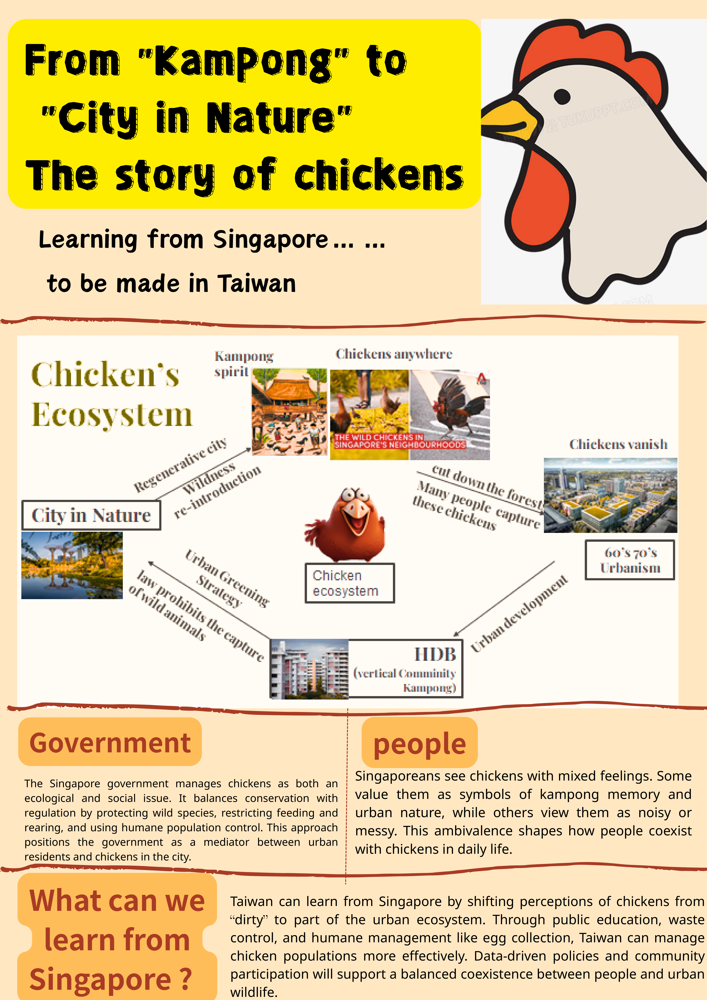

Writings & Reports
論著與作品集
收錄田野公共報導、刊物專欄評論與學術展示海報，記錄從街道倡議、地方創生到非正式聚落的書寫痕跡。
Field Reports & Advocacy
田野報導與街道倡議
田野報導 · 眼底城事 Eyes on Place (2026/07/20)
消失的路，失蹤的家：當我們在永春街，用身體撬動一場街道倡議
國立臺灣大學建築與城鄉研究所環境規劃設計實習成果，由霍漢橋、宋曼如、簡兆岑、麻筱祺、紀佳妤共同撰寫。記錄永春街——一座緊鄰臺大與寶藏巖、卻長期在城市敘事裡「失蹤」的非正式聚落——居民如何在破碎的人行道與制度懸置中艱難移動。從友善交通調查出發，因體制內陳情難以撼動現況，轉而以戰術都市主義進行貼紙與舉牌的街頭擾動，最終在寶藏巖國際藝術村策劃「299 失蹤計畫」展覽，並促成與市議員的對話。
同團隊作品〈富水之心，韌性永春：永春街聚落的都市更新展望〉於第二十一屆全國規劃系所實習聯展，榮獲「都市更新創新規劃獎」優選獎。查看正式公告
Urban Commentary
城鄉評論
田野書寫 · 城鄉評論 · 《城鄉通訊》
誰的地方創生？從淡路島看企業、科技與地方生活的交織
記錄二〇二六年六月參與國立臺灣大學與日本 Pasona Group 合作辦理之淡路島研習計畫的觀察與反思。文章探討 Pasona 如何以企業資源串連地方產業、教育與生活空間，扮演「地方規劃者」的角色；分析 Avatar 遠距分身技術如何重新定義高齡者與行動不便者的勞動參與，而非單純取代人力；並以廢校再利用的 Nojima Scuola 為例，討論空間活化如何同時保留防災與公共服務功能。文末反思公共運輸的可近性限制，指出地方創生除了產業與科技創新，居民能否便利、安全地生活同樣是關鍵條件。
Academic Posters
學術海報展示
National University of Singapore (NUS) · Short-Term Program (Fall 2025)
From 'Kampong' to 'City in Nature': The Story of Chickens
新加坡短期研習之學術發表成果。以新加坡城市中的野雞（Chickens）為觀察媒介，探討城市從傳統鄉村聚落（Kampong）邁向「大自然中的城市（City in Nature）」的生態治理過程中，非人物種與人居環境界線的協商與重塑。
